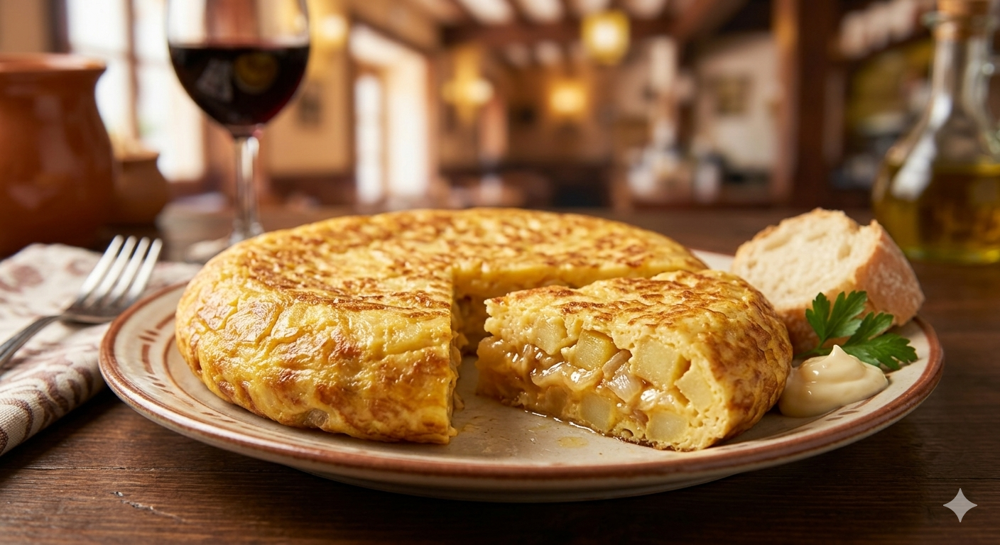

Tortilla Española
Un clásico que nunca falla. Con o sin cebolla (tú mandas, Jorge). Acompaña con un poco de pan con tomate.

Ensalada Salmón
Ligera y nutritiva. Salmón ahumado, aguacate, brotes verdes y un toque de sésamo.

Pizza Casera
Para el viernes noche. Masa fina, mucho queso y tus ingredientes favoritos.